Cátedra 3: Teoría Cinética y Presión
Derivación microscópica de la ecuación de estado del gas ideal: la presión surge de las colisiones de partículas con las paredes del recipiente.
Temas que cubre
- Modelo de gas ideal: partículas puntiformes sin interacción, solo choques elásticos
- Transferencia de momentum en una colisión con la pared
- Cálculo de la presión a partir de colisiones: $P = \frac{1}{3}nm\langle v^2\rangle$
- Sistema isotrópico: el gas no tiene dirección preferida
- Superposición de presiones parciales por dirección
- Relación $PV = \frac{2}{3}U$: presión y energía interna
Conceptos clave
Gas ideal
Modelo formado por partículas puntiformes de masa $m$ que no interactúan entre sí (o solo se golpean elásticamente). La única energía es cinética. Es una excelente aproximación para gases reales a baja densidad.
Presión como fuerza de colisión
Una partícula que choca elásticamente con la pared transfiere un impulso $\Delta p = 2mv_x$ (perpendicular a la pared). La presión es la fuerza total por unidad de área, acumulando los efectos de todos los choques.
Sistema isotrópico
En equilibrio, el gas no tiene dirección preferida: $\langle v_x^2 \rangle = \langle v_y^2 \rangle = \langle v_z^2 \rangle = \tfrac{1}{3}\langle v^2 \rangle$. Esto permite calcular la presión usando solo la componente normal a la pared.
Densidad de partículas $n$
Se define $n = N/V$ como el número de partículas por unidad de volumen. La presión es proporcional a $n$: más partículas por volumen → más colisiones por segundo → más presión.
Fórmulas fundamentales



Qué hay que entender
- La idea central es contar cuántas partículas chocan con la pared por unidad de tiempo y calcular el impulso de cada choque.
- La isotropía es clave: en equilibrio no hay dirección preferida, así que solo la componente $v_x$ contribuye a la presión sobre la pared perpendicular a $x$.
- El factor $\frac{1}{2}$ viene de que solo las partículas que se mueven hacia la pared chocan con ella (no las que se alejan).
- El resultado $PV = \frac{2}{3}U$ es notable: una propiedad macroscópica ($PV$) está directamente ligada a la energía microscópica total $U$.
- La ecuación $PV = Nk_BT$ no es un axioma: es un resultado derivado de la teoría cinética más la definición de temperatura.